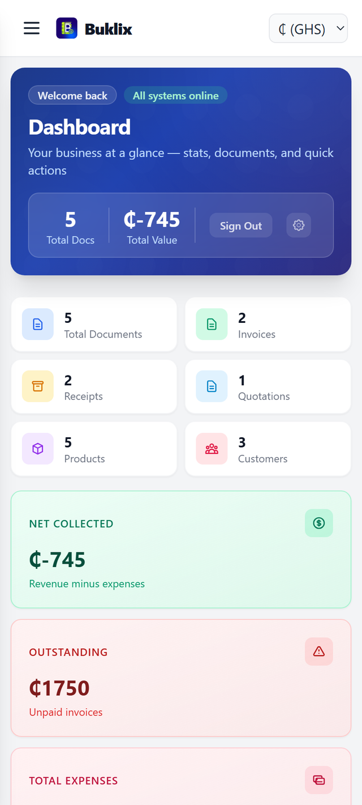
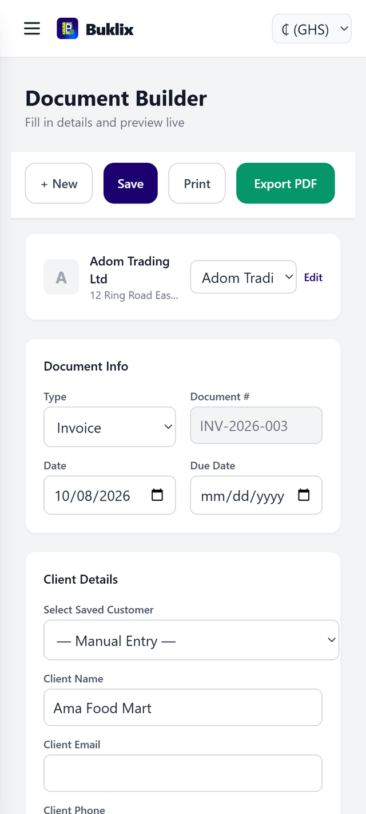
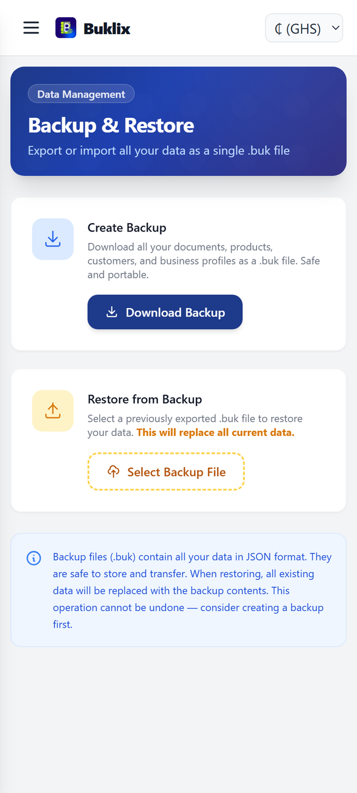
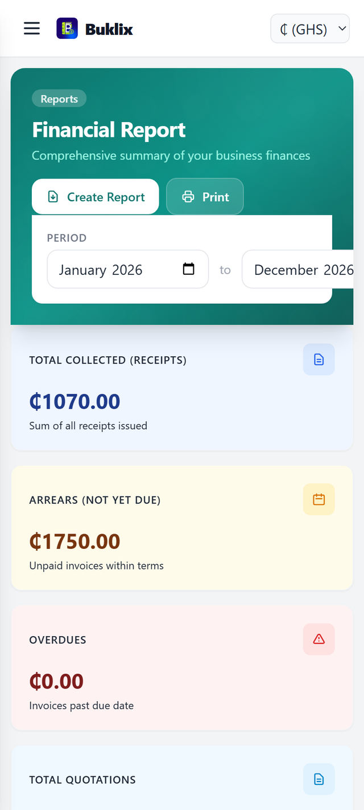

Bookkeeping for Android
Buklix creates invoices, receipts and quotations, tracks income and expenses, and keeps every record on your own device. No cloud, no sync, no waiting.
Free with no record limits · Works offline · Android 7.0 and newer

Ten tools that work together, none of them phoning home.
Documents, customers and numbers are stored in local storage on your phone. Open the app anywhere — no internet account, no sync, no server.
Build a document in seconds, watch the total update as you type, then export a clean PDF to share or print.
Keep every item with its price, SKU and stock level in one catalog, ready to bill whenever a customer orders.
Contacts, addresses and notes for everyone you serve — pick a customer and their details fill the document for you.
Record what comes in and what goes out as it happens, including payments due and running balances.
Revenue, unpaid invoices, expenses and trends — totals and charts that are current the moment you open the app.
Summaries of income, expenses and profit whenever you need the big picture of how the business is doing.
A backup is written every 60 seconds, and the Android file picker lets you export it to storage, an SD card, a USB drive or Google Drive.
One account per device. Your master password is stored only as a salted SHA-256 hash, with a security question, recovery key and printable credentials PDF.
Create as many documents as you like at no cost. An optional Buklix Pro upgrade removes the ads and the watermark on exported PDFs.
From a fresh install to your first backed-up document — ten steps.
Get Buklix from Google Play. The internet is used only for advertisements and licence checks — your data never needs it.
Choose a master password, a security question and a recovery key, then save the generated credentials PDF somewhere safe. Exactly one account lives on each device.
Open the Business Profile tab and enter your business name, address, contact details, document colours, payment details and logo — they appear on every document you create.
In Products & Services, record each item once with its price, SKU and stock level.
In Customers, save the people and companies you work with, along with their contacts and addresses.
Open Create Document, choose invoice, receipt or quotation, pick a customer, add your line items and watch the live preview. Save it, then export it as a PDF and share it with your customer.
Log transactions and expenses as they happen. The dashboard and analysis screens update on their own.
The Analysis tab shows trends, and the Financial Report tab gives you income, expenses and profit in one view.
In Backup & Restore, export a .buk file to any destination you trust. Moving to a new phone? Import that file and everything comes back.
Settings → Danger Zone → Delete Account removes every record from your device instantly. See Data Portability & Deletion.

Build an invoice — the total updates as you type.

Send a backup anywhere: storage, SD card, USB or Drive.

Your full financial picture, one tap away.
Last updated: October 2026
All of your business data created within Buklix — documents, customer information, product catalogs, expense records, financial reports, and account credentials — is stored exclusively on your local device using IndexedDB. None of that data is ever uploaded to any server, cloud service, or third party, and none of it is readable by anyone other than you. Your records reside physically only on the device you use, unless you yourself export a backup file and choose to store or share it elsewhere.
Some parts of the application do make network requests of their own, but they carry none of your business data. The advertising and purchase components described in section 2 contact Google servers for advertisements, consent, and licence checks using an advertising identifier — never your records. Buklix sends no document, customer, product, expense, report, or credential content anywhere.
Buklix is a single-account application. Exactly one account exists on each device installation: there are no team accounts, shared workspaces, staff logins, or user profiles that another person can view, manage, or request access to. Everything you enter is visible only to you, on this device.
Buklix is free to use, with no record limits. It is supported by advertising and, optionally, by an in-app Buklix Pro upgrade that removes advertising and the watermark on exported PDFs.
Advertising. The application contains the Google Mobile Ads SDK, which shows a banner advertisement at the bottom of the screen and, on occasion, a full-screen interstitial after every 5 new documents you create. The Google Mobile Ads SDK collects the Android Advertising Identifier and may collect device and network information in order to select, deliver, and measure advertisements. That information is processed by Google under the Google Privacy Policy. You can reset or opt out of the advertising identifier at any time through Android Settings → Privacy → Ads. Buklix itself does not read, store, or transmit this identifier and does not build any profile about you.
Consent. On first launch, the Google User Messaging Platform consent form is presented to users in regions that require it. You may decline personalised advertising and continue to use Buklix with no loss of functionality; non-personalised advertisements are shown instead.
Purchases. If you choose to buy Buklix Pro, the transaction is handled entirely by Google Play Billing. Prices, payment methods, billing dates, and renewal terms are managed by Google Play. Buklix only checks whether an active purchase exists on your Google account in order to switch off advertising and remove the watermark; it never sees or stores your payment details. Purchases are tied to your Google Play account and cannot be transferred to another account.
Apart from the two Google components described above, the application makes no network requests of any kind. It contains no analytics, no crash-reporting SDK, no tracking code, no cookies, no content delivery network (CDN), and no fingerprinting mechanisms, and it never transmits any of your business records anywhere.
Buklix asks you for no information about yourself beyond what is required to run the app on your own device. Version 2.1.0 removed the last remaining such question: the optional “How did you hear about this app?” dropdown on the create-account screen. That field was the only part of the app that recorded how you found the product, and it has been deleted from the interface and from the local user record. No demographic, location, behavioural, or marketing data is gathered at any point by Buklix itself, including during registration.
Your master password, security question answers, and recovery key are stored locally on your device as salted and hashed values using SHA-256. Plain-text passwords are never stored, logged, or transmitted. You may download a PDF containing your credentials for offline safekeeping. David Kissward has no ability to access, reset, or recover your credentials under any circumstances. You are solely responsible for safeguarding this information. Your account is the only account on this device; there is no separate administrator or support account that can sign in as you or view your records.
The application performs automatic backups every 60 seconds to a local backup file (autobackup.buk) stored inside the application's private storage on your device. You may also manually export your data to .buk files from the Backup & Restore tab. When you do, the Android file picker lets you choose the destination yourself: your device's internal storage, an SD card, a USB drive, or a cloud location such as Google Drive. Buklix does not upload anything on its own; the destination you pick is written to by the system file picker, and the file is only shared if you share it. You may also import previously created backups from the same picker. These backup files contain all your business data in JSON format, and a backup may also contain your account name and its salted password hash so that your sign-in can be recreated on a new installation. You are solely responsible for how you store, share, or transmit these files.
The application bundles the following open-source libraries locally, all of which operate entirely on your device with no data transmission: Tailwind CSS, Dexie.js, html2canvas, jsPDF, and html2pdf.js. None of these libraries collect, transmit, or store your data. No CDN is used; every dependency ships with the application.
The application also packages two Google components that are not offline and that do contact Google servers: the Google Mobile Ads SDK (advertising) and the Google Play Billing Library (purchases). Both are described in detail in section 2. The only permissions the application uses are INTERNET — required solely for advertisements, consent, and licence checks — and ACCESS_NETWORK_STATE, added by the advertising SDK. Buklix requests no location, contacts, camera, microphone, phone, or storage permissions.
You have full control over your data at all times. You may export your complete data set as a .buk backup file from the Backup & Restore tab.
To delete your account and all associated data: tap the Settings gear button in the app header, scroll down to Danger Zone, tap Delete Account, enter your master password and tap Permanently Delete. Your account and every record it holds — documents, customers, products, expenses, reports and stored credentials — are removed from your device immediately. This cannot be undone.
If you are unable to open the app, email kisswarddavid2@gmail.com with the subject "Buklix account deletion request" and we will respond promptly with instructions.
Your records are stored only on your own device, so they cannot be deleted by us remotely; the in-app Delete Account action is the authoritative path. Creating a manual backup before deleting is recommended, as data removal is permanent and irreversible.
Buklix is not directed at individuals under the age of 13. The application does not knowingly collect any information from children. If you believe a child has provided personal information through the application, contact us immediately.
David Kissward reserves the right to update this Privacy Policy as needed to reflect changes in the application, legal requirements, or business practices. The "Last updated" date at the top of this page reflects the most recent revision. Continued use of the application after changes constitutes acceptance of the updated policy.
If you have any questions, concerns, or requests regarding this Privacy Policy or your data, please contact: